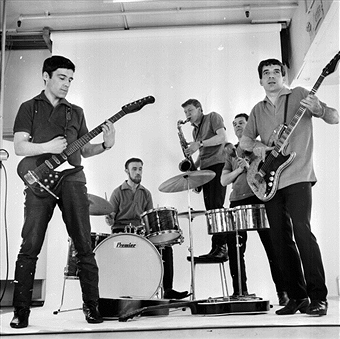

Lazertai's is a family run musical instrument workshop & recording studio with over 50 years of experience serving the music community in the UK. We offer musicians a huge selection of guitars, amps, drums, pianos, keyboards, synthesizers, recording equipment, PA systems, music accessories and more in our studio & offer many types of work to be carried out in our workshop. Originally started in 1964 by Jack Lazertai, in order to record his band and make changes to their instruments (in the workshop). The Lazertai legacy has lived on today through the studio & workshop.
